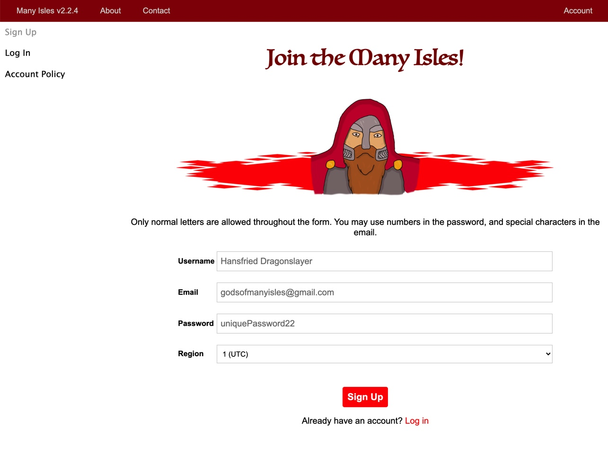

Many Isles Wiki - How To - Account
Account
Accounts on this website are the core identity of your avatar in the entire community, and is connected with great benefices. Create one in these easy steps!
Find the Page
Here's a direct link to the account creation page.
If you're looking for it from the website, you can simply click account on the top navigation bar. If you're on the homepage, you can find a link to it on the uppermost right tab, labeled "Account".
Alternatively, you can type "manyisles.ch/accounts/Account.html" in the search bar of your browser.
Digital Store Account. If you make a purchase in our digital store, you can smoothly create an account while checking out as a first step.
Create Account

Creating an account is extremely simple; we only need three pieces of information from you.
Username. This will remain connected to you throughout your entire presence in the Many Isles. Please make an NSFW username that you'll still be happy about two years later, such as your rpg character's name or your gaming name. We recommend not using your real name.
You can only use normal letters and numbers in your username, no special characters.
Email. We don't require you to use your normal email that you check every hour and that you're afraid of cluttering (although we don't often send mails). However, we occasionally send important administrative notifications to it, it's your only way to recover your account, and you'll need to confirm it to close a partnership, so don't enter a fake one.
Password. The key to your entire account, make sure you don't use the same one anywhere else. Additionally, feel free to add odd numbers. We can't see your password.
Only input letters or numbers here; no spaces or any other characters.
Region. This can be used by other people to know your general time zone, and possibly for matchmaking in our future adventures tool.
Sign In
Some tools, such as the spell list, require you to be signed in to use them. If you're logged out of your account, simply navigate to the account page as shown above, click on "Sign In" beneath the "Sign Up" button, and enter your username and password.
Account Page
When you're signed in and navigate to your account, you'll find a page divided in a couple sections, which are discussed below.
Main Block
Partnership Block
Depending on your partnership closure stage, this block looks different.
No Partnership
You'll see a single page, "Be Partner", which allows you to quickly create a partnership.
Existing Partnership
Partnership Overview. Here you can quickly get an idea of how your publications are doing.
Edit Partnership. Your main creator page.
Trade Policy. A quick overview of our digital library publication policy. For more information, see the Trader's Agreement.
Extras Block
Confirm Email
Further Questions
Why a Many Isles account?
Accounts on this website are the core identity of your avatar in the entire community. For any and all purposes, we refer to this account as representative of yourself.
With an account, you can publish products to the digital library, join the community's discord, and start your way up our ranks. Become a leader of the Many Isles!
What does an account unlock?
Many Isles accounts give you access to a ton of cool stuff.
Publish your Brews. You can easily create a partnership and publish cool products to the digital library.
Get a universal Many Isles identity. Many achievements you get or things you do with your account will be available in the entire Many Isles. For example, your tier and title will be visible on discord.
Premium product access. Depending on your tier, you can download premium products from our digital library.
Digital store purchase. You need an account to make purchases in the digital store. By the way, account creation is smoothly integrated into the checkout process.
Spell List. Save your awesome spell lists with an account.
Why confirm an account?
A confirmed account additionally unlocks creating partnerships and spell lists.